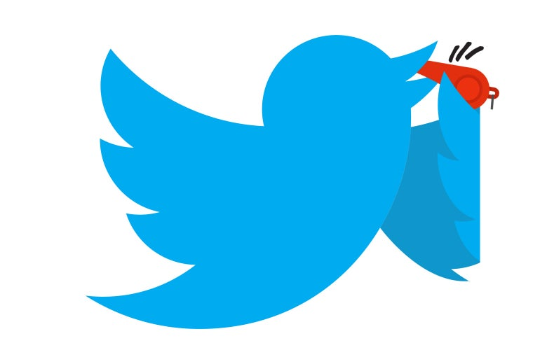

The Impact of Twitter on Free Speech
A lot of people today use twitter for different reasons. Some use it to keep up with latest news, some use it to post their controversial opinions, usually through "burner accounts", some people use it to promote their influencer lifestyle, modeling or business, some "trolls" use it to trigger and annoy other users, and some, like me use it for memes and to get a good laugh. Twitter has had a positive impact on freedom of speech in that it is a platform for people to voice out their controversial thoughts without getting censored. In fact, twitter threads facilitate discussion about controversial topics between groups with different views. It is also a platform for individuals to find communities that share similar interests and views. Twitter has also been used to protest unfair government practices and to raise awareness on issues going on around the world, for example twitter was used recently to amplify the voices of troubled Nigerians during the "End Sars" protests. Twitter has also had a negative, albeit insubstantial impact on freedom of speech in that it is possible to get "canceled" due to an opinion you post on twitter that most people do not agree with. Usually when people get canceled, they lose their jobs, endorsements and basically most sources of income they have. This fear of getting canceled could prevent a person from posting controversial opinions that they have, thereby indirectly limiting free speech. This is not much of an issue, though since canceling usually arises due to hate speech, racist comments, or just plain lack of respect for people. Therefore, twitter has mostly had a positive impact on freedom of speech.
By Treasure Ogundiran